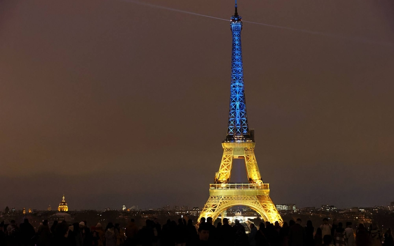

À LA UNE
Ces façades qui font voyager sans quitter Paris
Des plus modernes aux plus anciennes, ces façades parisiennes nous emmènent en voyage vers des contrées plus ou moins lointaines, tout en restant au coin …
Des plus modernes aux plus anciennes, ces façades parisiennes nous emmènent en voyage vers des contrées plus ou moins lointaines, tout en restant au coin …

08h00 • Le saviez-vous ? Le 24 février 1961, le général de Gaulle, alors président de la République, inaugure la première aérogare de Paris-Orly devant une foule d'officiels et d'invités triés sur le volet.
EN SAVOIR +13h58 • Ukraine. Alors que l'invasion russe a débuté il y a un an le 24 février 2022, la tour Eiffel arborera les couleurs ukrainiennes du 23 au 26 février. Prague, Londres, Madrid, Budapest, Varsovie, Berlin, Bruxelles et Buenos Aires participeront aussi à cet hommage.
EN SAVOIR + 08h00 • Le saviez-vous ? Le 23 février 1653, le duc de Nemours organise une grande fête à Paris pour célébrer le retour du roi Louis XIV à Paris après les troubles de la Fronde. Lors du spectacle à l'hôtel du Petit-Bourbon, en face du Louvre, le jeune Louis XIV danse, dissimulé derrière le masque du soleil : c'est l'origine de son surnom de « Roi soleil ».
EN SAVOIR +
Des plus modernes aux plus anciennes, ces façades parisiennes nous emmènent en voyage vers des contrées plus ou moins lointaines, tout en restant au coin …
08h00 • Le saviez-vous ? Le 24 février 1961, le général de Gaulle, alors président de la République, inaugure la première aérogare de Paris-Orly devant une foule d'officiels et d'invités triés sur le volet.
EN SAVOIR +13h58 • Ukraine. Alors que l'invasion russe a débuté il y a un an le 24 février 2022, la tour Eiffel arborera les couleurs ukrainiennes du 23 au 26 février. Prague, Londres, Madrid, Budapest, Varsovie, Berlin, Bruxelles et Buenos Aires participeront aussi à cet hommage.
EN SAVOIR +08h00 • Le saviez-vous ? Le 23 février 1653, le duc de Nemours organise une grande fête à Paris pour célébrer le retour du roi Louis XIV à Paris après les troubles de la Fronde. Lors du spectacle à l'hôtel du Petit-Bourbon, en face du Louvre, le jeune Louis XIV danse, dissimulé derrière le masque du soleil : c'est l'origine de son surnom de « Roi soleil ».
EN SAVOIR +